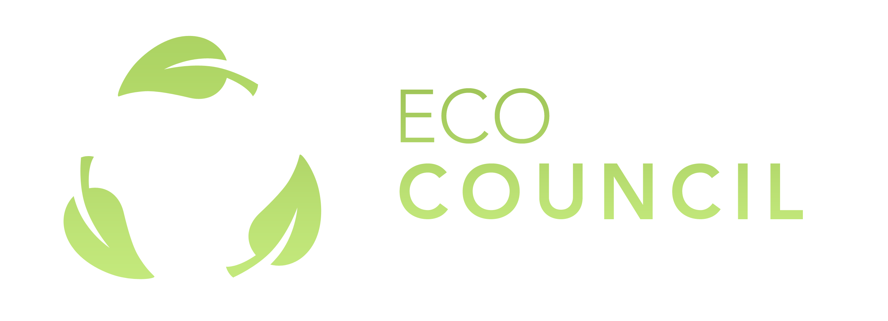
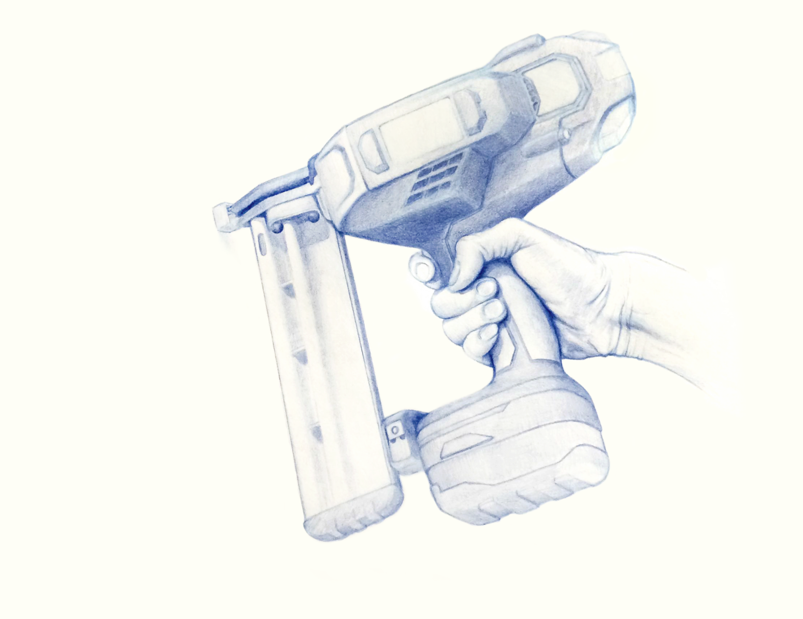

Interdisciplinary Work
I've done a lot of design work over the years. My interest in visual arts and background in Industrial Design has helped me gain a lot of skills and experience.
Industrial Design
In my first year of studying industrial design, I was tasked with designing a vase. I designed a vase that easily allows for watering with a seperate entrace. Care was also put into the curves and angles. (2015)


Graphic Design
The Eco Council was a group at my high school that discussed matters relating to environmental friendliness at school. I made a simple logo that can work with or without the logotype.

Rendering of a thermostat done in Photoshop.
Sketches
 My drawings alongside those of my colleagues ∙ 2014
My drawings alongside those of my colleagues ∙ 2014
 Pencil drawing of a VW Beetle ∙ 2014
Pencil drawing of a VW Beetle ∙ 2014
 Pencil drawing of my hand with an old Apple Remote ∙ 2013
Pencil drawing of my hand with an old Apple Remote ∙ 2013